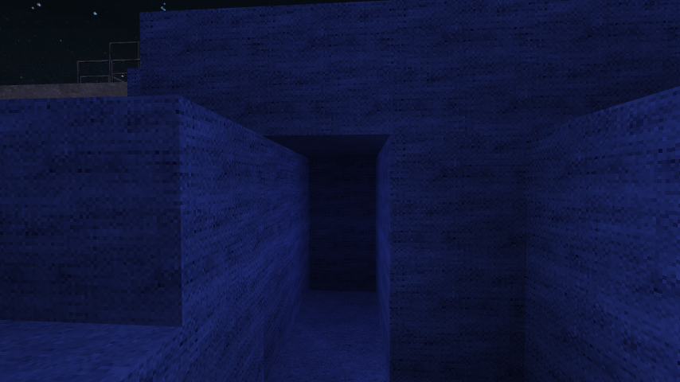
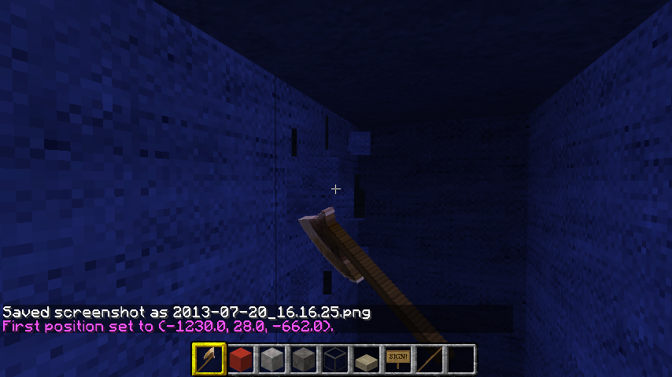
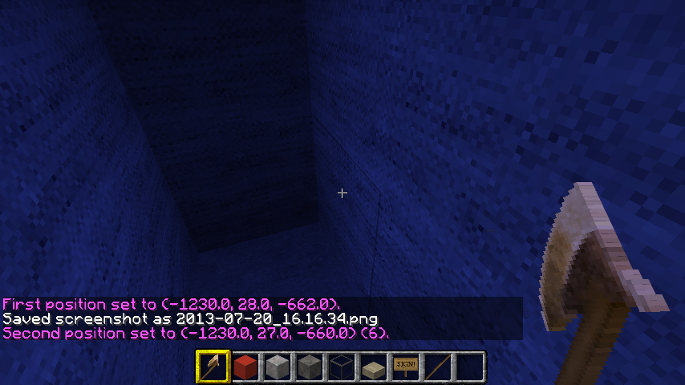
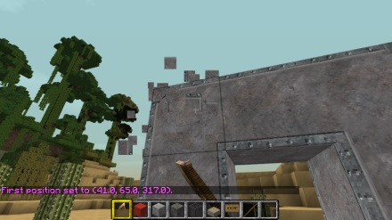
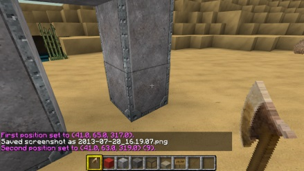
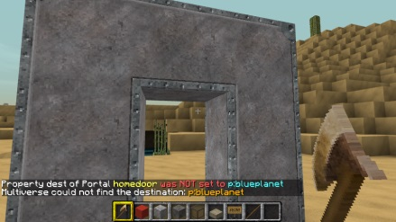
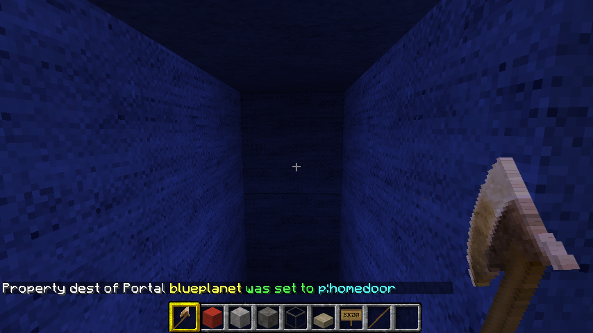
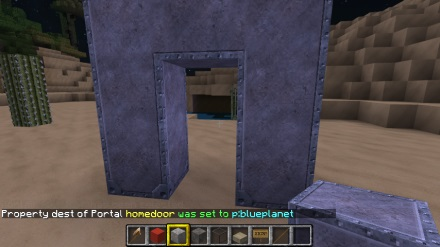

Multiverse lets you create and move between multiple worlds in Minecraft with the Bukkit server. You can run /mv tp [worldname] to go to any world, but it can be more interesting to create "doors" or portals from one world to another. One idea with a space world is to associate "planets" with worlds by building a portal into the planet that takes you to the world it represents.
Make a little hole into the side of your planet.
Use your wooden pick axe to select the upper left side of the door as the first position, and the lower right side of the door as the second position.
 Then run this command:
/mvp create blueplanet
Now type /spawn to go back to the original world. Fly around and find a spot to make a "portal". Build a simple arch with any material. Here I've built an iron arch in a sandy area.
Use your wooden pick axe to select the upper left corner of the arch as the first position, and the lower right side of the arch as the second position.
 Now run these commands to create the second portal and to connect them:
/mvp create homedoor/mvp modify dest p:blueplanet/mvp select blueplanet/mvp modify dest p:homedoorIf you make any mistakes it will tell you. :)
Now if you walk through the arch you will be transported to the doorway in the blue planet, and if you walk into the doorway in the blue planet, you will be transported to the arch.
 Finally please take a look at my Gallery ->